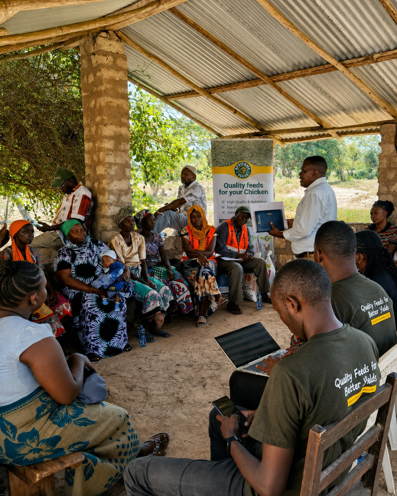
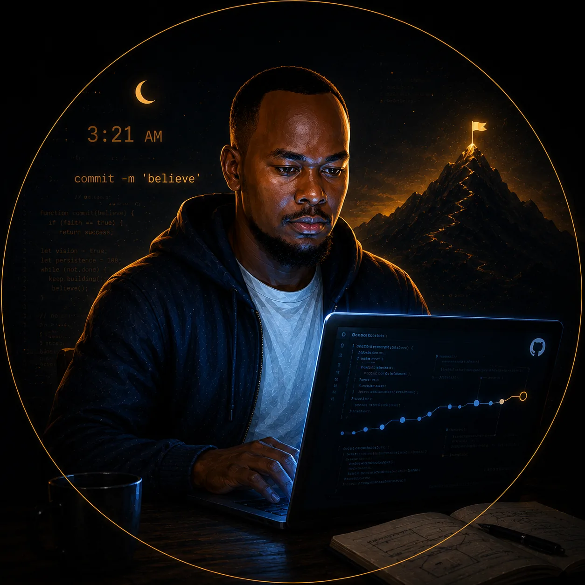
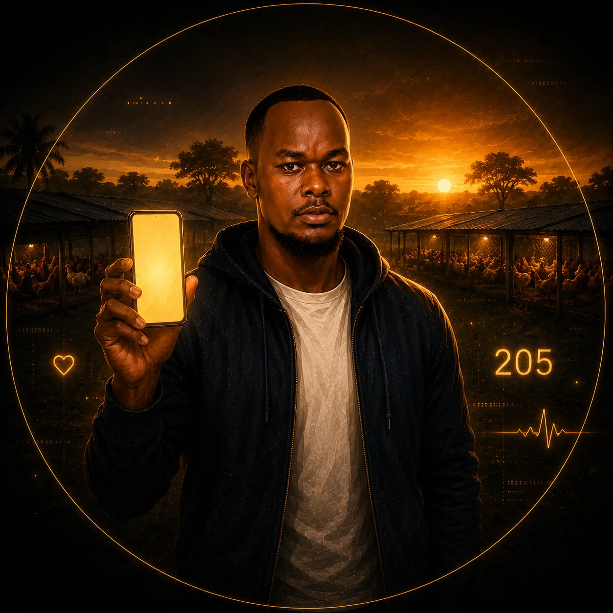
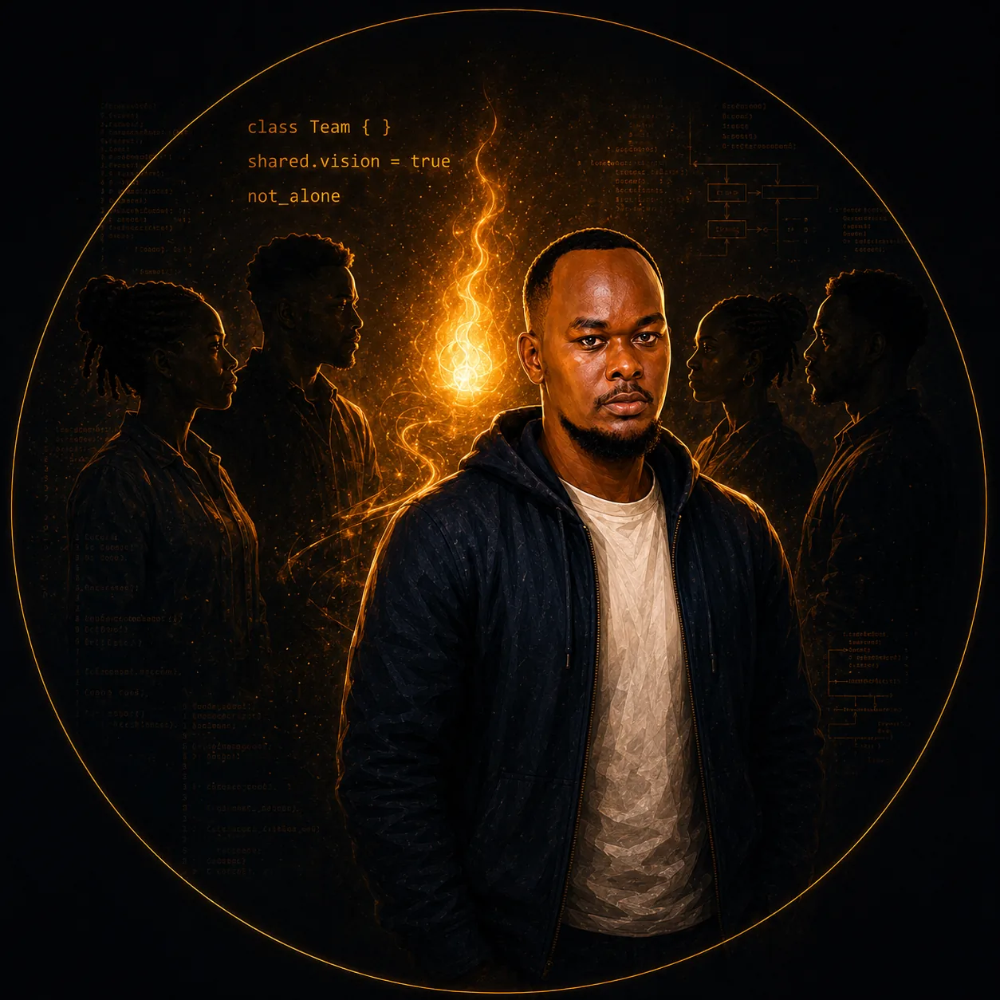
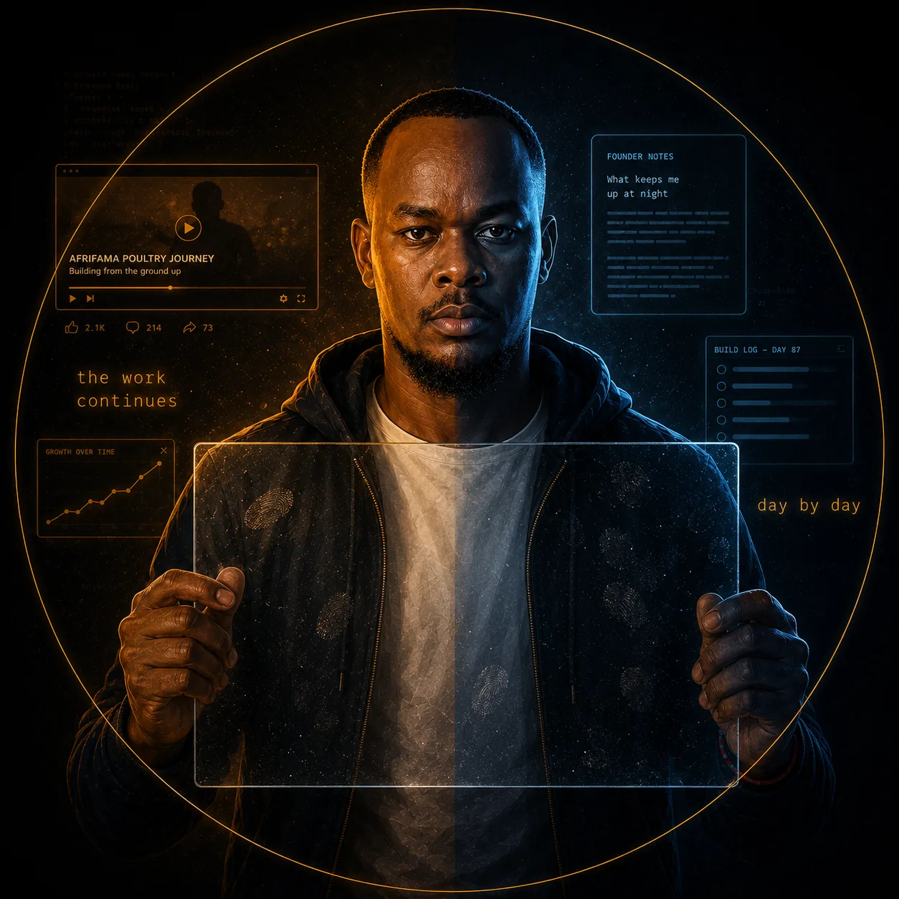

Founder Notes
Honest essays on entrepreneurship, belief, failure, farmer systems, and the work behind the work — written while the story is still unfolding.
17 articles
What Building Is Teaching Me: The Cost of Growth
A 2:35 a.m. Founder Note on rain, rest, relentless building, the momentum from Tanzania, and working forward after setbacks.
What Do You Do When You Get Tired?
A 1:01 a.m. Founder Note on exhaustion, learning to recognise progress, the roads through Tanzania, and accepting that rest cannot always wait.
What Keeps Me Up at Night: Is the Grid Penalty Worth It?
A 3:27 a.m. Founder Note on building systems for real problems, validating every layer, and deciding whether faster development is worth the cost.
What Keeps Me Up at Night: The Weight of Responsibility
A 3 a.m. Founder Note on bigger expectations, plans that get punched in the face, and remembering that every smaller step still counts.
What Keeps Me Up at Night: The Builder Returns to Nairobi
A near-missed train, a first-class ride through Tsavo, and a founder returning to Nairobi with three bags, rolled banners, and a dream that survived the Coast.
What Keeps Me Up at Night: A Busy Week Ahead
A 2am Founder Note on Kimi's Belgian win, Afrifama's first administration and finance hire, the road to Nairobi, and learning to hold the line through a busy week.
What Keeps Me Up at Night: I Built the Thing Nobody Sells You
Seven nights, twelve modules, and a borrowed machine. A 2am Founder Note on building the inventory system nobody sells and solving the problem inside the business.
What Keeps Me Up at Night: The Idea Waited for Us to Grow
A reflection on an early idea called Kukuza, the lessons that shaped Afrifama, and the 205 farmers now waiting for the dream to grow.

Did I Just Become Dangerous Overnight?
A 2am Founder Note on building two websites in one weekend, identity, belief, and deciding who you are before anyone gives you permission.
What Nobody Tells You About the Light Bulb Moment
Nobody tells you when the light bulb moment is coming. It shows up disguised as exhaustion, a rejected phone call, and a business plan you keep going back to at 9pm.
Belief
On stubborn belief, two underdog football wins, and building a real farmers' platform from scratch — one 3am commit at a time.

Proof of Life
205 farmer applications, a website built on a phone, and the quiet admiration in mentoring rooms I rarely talk about. An honest proof of life from the road.

When the Dream Is No Longer Yours Alone
For a long time, the dream was almost entirely mine to hold. Something has shifted lately, and I think it is worth writing about honestly.

I Built a Website on My Phone at 2am
Three nights. My phone. Zero developers. Less than six dollars. Here is what happened when I decided to stop waiting and just build.
Building in Public, But Honestly
For a long time, I thought building a business meant waiting until everything looked polished. Entrepreneurship has taught me something different.

What Keeps Me Awake at Night: Meeting With Destiny
A 1:55am reflection on a decade of dreaming, the lows that almost ended Afrifama, and a meeting that could change everything.
Silence Never Ends a Story
A founder's annual reflection on slow growth, an angel investor, The Alchemist, and what building quietly in Sub-Saharan Africa really feels like.
- What Keeps Me Up at Night: Proof of Life
- Turning Passion into Purpose: A Year of Content Creation
- Invest in Innovation: Afrifama's Open Letter to Investors